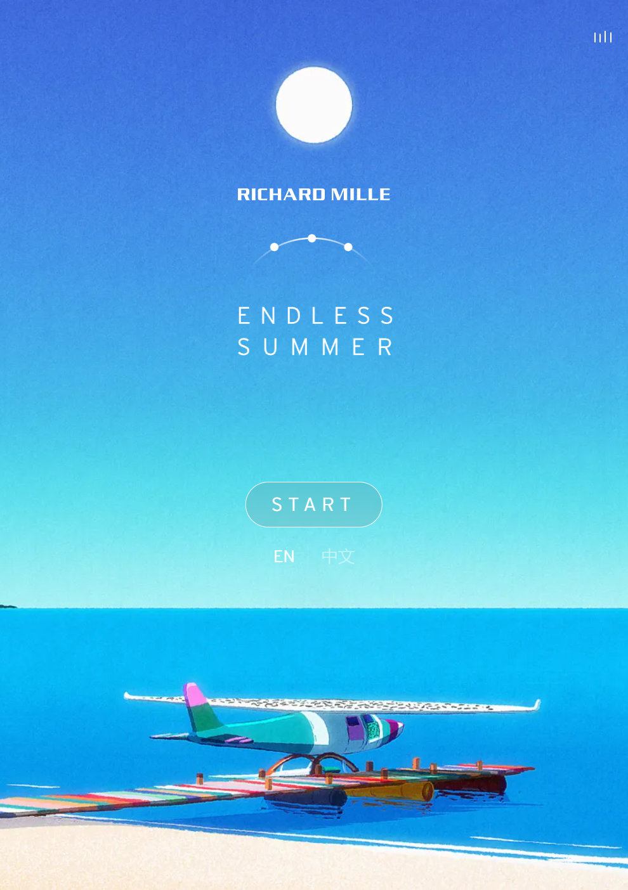

Interactive
Experience Review of
Endless Summer
by Richard Mille


What grabbed my attention at first was the stylized 3D animation of the experience. It showcased beautiful views of a whole day in summer.
Clicking across the screen to activate and start the user journey but nothing happened.
Resizing the screen to that of a mobile shaped screen, which finally started the user journey.
Click-dragging the wheel below the screen to continue to the next step.
During each scene, I dragged the video around to look at the complete loop animation. It was to look out for interactables and to admire the whole animation.
I was constantly moving around the minimized screen to look at the full view of the looped animation.
I spent most of my time engaging with the scroll wheel at the bottom of the screen, moving it to change the scenery and time shown on the screen.
It was not clear what the intended primary goal was throughout my experience interacting with the website.
While on my run with the interactive experience I had no idea that the primary goal was to promote an analog watch of a new series by Richard Mille.
I feel as though it should be interacted with once and slowly. Looking through each section with intent and curiosity. Appreciating the art and story the whole experience is trying to tell.
The interactive experience communicated well how it should be interacted with by creating a tutorial that displayed simple instructions and highlighting important buttons and interactive media.
Stylized 3D animated loops, images, possibly Virtual Reality, Blender and City Pop Artstyle are referenced in this experience.
These references makes me feel relaxed, at peace and nostalgic but it also fills me with inspiration. It communicates that I should be engaging my research experience with vibrant curiosity and passion.
The part that I found most frustrating during my interaction was that the only to move forward in the story was through click-dragging the scroll wheel. I wanted to skip a few sections and there was no easier way to do so.
I think for me, the most satisfying part of the whole interactive experience was the poetic interlude added to enhance the immersion of the user. It makes it more enjoyable and leaves a more impression.